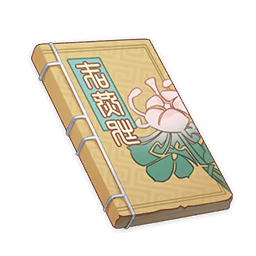

Liyue · Books & Literature
Customs of Liyue
Compiled by the Sumeru scholar Fadhlan and edited with local scholars, Customs of Liyue is a three-volume cultural survey of wedding customs, the Rite of Descension, and Silk Flower craft and folklore. Its origin stories and questions about Rex Lapis are presented as tradition and speculation, not settled history.

Book record and three-volume structure
Customs of Liyue is a three-volume cultural survey compiled by Fadhlan, a Sumeru scholar living in Liyue, and edited by local scholars. Its description calls it a bestseller. The volumes are Flower Ball, Receiving God, and Silk Flowers; together they move from wedding practice and the Rite of Descension to botanical craft, perfume, and folklore.
The volumes have different in-game locations: Flower Ball can be found at Wanwen Bookhouse and is also associated with Soraya’s dialogue reward; Receiving God is on Ningguang’s desk in the Jade Chamber; and Jifang sells Silk Flowers at Wanwen Bookhouse. The Jade Chamber volume is easy to miss during the Liyue Archon Quest.
Volume I: a wedding flower-ball custom
The first volume describes a Liyue wedding in which the bride throws a flower ball toward the guests. Catching it is treated as an omen of a fortunate year: the book associates it with prosperity, romantic partnership, and a happier married life. This is a folk belief reported by the book, not a guaranteed supernatural effect.
The ball’s materials vary by household means. Wealthier families may use woven silk made from Silk Flowers, while others make balls from colored paper or cloth. The text emphasizes that the shared custom remains recognizable across those differences. It also jokes that the practice causes many injuries, with the Millelith’s records supposedly placing them on a level with monster attacks.
Two competing origin traditions
Fadhlan records two explanations rather than choosing one. One says Liyue adopted the custom from Mondstadt’s Ludi Harpastum. The other places it before the Archon War and links it to Havria, the Salt God: a legend says she distributed flowers to comfort or bless her people, and that her followers may have carried a related practice elsewhere in Liyue.
The account marks these as what people say and as a possibility. It supplies no dated record connecting the modern wedding toss to either source. The flower-ball custom is well described as a tradition in the book; its origin remains unresolved.
Havria and the evidence from Sal Flore
Zhongli’s Story Quest, Sal Flore, confirms that Havria’s people lived at Sal Terrae and that her remains and the traces of her death were preserved there. Zhongli describes her as gentle but weak in the Archon War. Some of her followers killed her as a quick release rather than let her suffer a defeat at the hands of other gods; survivors then fled to Liyue. This adds context to the book’s compressed and harsher description of her death.
The quest supports a migration from Havria’s community into Liyue, but it does not say that those refugees brought the flower-ball rite with them. That proposed link belongs to the book’s uncertain origin story, not to the quest’s confirmed account of Havria.
Volume II: the Rite of Descension and the Qixing
Receiving God presents the Rite of Descension as a public meeting between Liyue and its Geo Archon. In the earliest period described, farming communities chose representatives to welcome Rex Lapis, make offerings, hear his guidance for the coming year, and carry that guidance back to their neighbors.
After the Archon War, the volume says Liyue Harbor flourished under the Qixing. It describes them as representatives of the trades and intermediaries who communicated Rex Lapis’s predictions, explained them to the public, and turned them into policy. The text therefore records both a divine ritual and an older division of administrative work between the Archon and the Qixing.
The book’s account and Liyue’s later transition
The book uses present-tense language for Rex Lapis’s descent and annual guidance. The Archon Quest shows this custom in operation at the opening of Chapter I: Act I, when Rex Lapis appears at the Rite of Descension. By the end of A New Star Approaches, Zhongli explains that he staged his death to test whether Liyue could govern itself, and that the Qixing took governing power after the crisis.
Read the book as an in-world account of the former arrangement, not a timeless or necessarily current report. It captures how Liyue understood the relationship between the Geo Archon and its mercantile government before the transition shown in the quest.
Volume III: Silk Flowers, perfume, and commerce
The last volume describes Silk Flowers as useful for both fiber and fragrance. It says cultivated strains supply perfume making, that scents carry social meanings, and that tactfully recognizing a woman’s perfume could serve as a sign of attentiveness in courtship. These details make the flower part of domestic life and social display as well as a familiar Liyue product.
The text says commercial demand encouraged mass cultivation and new strains in populated areas, while geographic change and mining damaged wild habitats in the countryside. It also describes merchants using elaborate tales about Rex Lapis or an adeptus to sell flowers. These ecological and commercial observations belong to Fadhlan’s account; the stories attached to a particular flower are presented as salesmanship, not reliable provenance.
The Mt. Aocang adeptus legend
A rural tradition says a reclusive adeptus on Mt. Aocang taught people how to make Silk Flower perfume. The story tells of an illuminated bird appearing to a young woman at a spring and showing her how to prepare and apply fragrant oils. It casts the lesson as part of a broader gift of courtship knowledge learned from animals and plants.
Fadhlan explicitly notes that many versions of the legend exist and that the woman’s identity cannot be recovered. The bird form and Mt. Aocang may invite readers to connect the figure to Cloud Retainer, but this volume does not name the adeptus. That identification should remain an inference rather than a stated fact.
Rex Lapis, feminine offerings, and Fadhlan’s limits
Fadhlan closes with an open question: whether Rex Lapis, who usually appeared to mortals in a masculine form, ever took a woman’s form and accepted a flower offering. He notes that historical records are sparse and rumors plentiful, so he cannot verify the possibility or dismiss it outright.
He then separates that question from his own observation. Fadhlan says he once saw a Statue of the Seven accept a carefully prepared, distinctly feminine gift in worship; he does not say he witnessed Morax taking a feminine form or identify the giver. As an outsider, he declines to claim knowledge of the Geo Archon’s private response. The passage preserves a question and a worship anecdote, not proof of a second form.
How to read Customs of Liyue
The collection is valuable as a record of how one resident scholar describes Liyue’s customs and popular stories. Its claims have different levels of certainty: the book describes social practices; it reports traditions with phrases that signal hearsay; and it openly labels some historical questions as unanswerable. The quest record confirms parts of the Havria story and the later shift in governance, while leaving the proposed flower-ball origin unconfirmed.
The book does not name the Mt. Aocang adeptus or the young woman, establish that Rex Lapis ever took a feminine form, or prove that a modern wedding custom began with Havria or Ludi Harpastum. Keeping those gaps visible preserves the distinction between Liyue’s cultural memory and events that the game independently confirms.
This is an original CoreGG reading guide, not an official HoYoverse article or a reproduction of the game text. Source links below identify the records used so you can check the original context.
Sources & references
Check these sources for the original game text and reference trail.